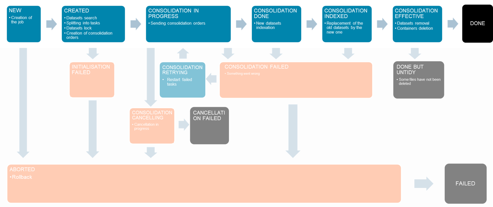

Consolidation
Why ?
Consolidation is the process of optimizing the data format, the projection and the tiling of the datasets to fit with the needs of the project. Depending on the depth of the timeseries that is usually needed, the size of the tiles requested, the memory requirements, etc, the datasets can be optimized to improve the speed of access to the data or the memory impact.
Consolidation is not mandatory, but some applications, especially those requiring massive data and deep timeseries, may suffer from poorly formatted images.
For instance, consolidation may be a game changer in the following cases (all the more, if the images are retrieved more than once - reprocessing, visualisation):
- if the image format is not cloud-optimized (jpeg2000, GeoTiff, ...)
- if the images are retrieved as timeseries
- if the storage has a high latency per object.
- if the datasets are not in the right projection or resolution
- if the images are retrieved with low resolutions (creation of overviews)
- if the processing requires small tiles (e.g. deep learning)
During the consolidation, the datasets will be tiled, reprojected, casted and merged into files optimized for the needs of the user.
Consolidation parameters
The consolidation parameters that describe the data format of the optimized datasets are linked to a variable:
- Internal
Dataformat Exponentfor the mapping between internal dataformat andvariable.dformat(see formula below)Resampling algorithmused for reprojection and overviewsCompressionof the data
NB: regarding the mapping of the dataformat, for the consolidation process, the MinOut/MaxOut are the Min/Max of the variable.
The consolidation parameters of a variable are configured with ConfigConsolidation(). A call to ConfigConsolidation() will update the consolidation parameters of the variable and it will only affect the future consolidations.
Layout
The datasets will be tiled, reprojected and stacked on a grid defined by a Layout.
The layout has external parameters that define the grid:
- grid_parameters : dict of parameters, containing at least a grid type (actually only singlecell and regular are available)
- grid_flags : list of flags
and internal parameters that define the internal tiling and the depth of the stacking:
- block_shape
- max_records per file
- Creation of Overviews
- interlacing_pattern that describes how to interlace the Records, the Bands, the Zooms level/overview and the Tiles (geotiff blocks). See Layout()
The layout must be carefully defined depending on the performance expected in terms of access. The size of the cell of the grid multiplied by the maximum number of the records and the datatype will give the maximum size of the final files.
The grid can be a single-cell grid : at the beginning of the consolidation, the aoi of all the datasets will be projected and merged in the given crs. The bounds of this aoi give the size of the cell. Single-cell grid can be used to consolidate a bunch of already aligned records, like Sentinel-2 granules.
Be careful with Single-cell Layout as the merged aoi may be very large and caused memory errors.
Consolidation
As a GetCube request, the Consolidation request requires a list of records and an instance of a variable to select the datasets that will be consolidated.
Then, the consolidater defines the containers that will be created from the layout : each cell of the grid of the layout intersecting at least one dataset will result in a new file/container.
Finally, the Consolidation Parameters that are linked to the variable is used to define how to create the container from the datasets (dataformat, overviews...).
The Consolidate() function will create an asynchronous consolidation job.

Below are described all the state of the consolidation.
NEW
During this step, the datasets are selected, regarding the records and the instance, and locked to prevent an other job from modifying them. The job is created in the database.
| Action | Effect | NewStatus |
|---|---|---|
| ForceRetry | NEW | |
| Cancel | Only if job is waiting (STEP_BY_STEP_ALL) | ABORTED |
| ForceCancel | Rollback | ABORTED |
CREATED
For each cell of the grid of the layout, the list of the datasets intersecting the cell is retrieved. This list is inspected to determine whether or not a consolidation is required (the dataset might already be consolidated on the same layout).
If a consolidation is needed, a consolidation task is created.
| Action | Effect | NewStatus |
|---|---|---|
| ForceRetry | CREATED | |
| Cancel | If job is waiting (STEP_BY_STEP_ALL) | ABORTED |
| ForceCancel | Rollback | ABORTED |
CONSOLIDATION IN PROGRESS
The consolidation tasks are sent to the consolidation workers, that get the cube of data intersecting the cell and format it in a new MuCOG.
| Action | Effect | NewStatus |
|---|---|---|
| Retry | Retry the FAILED tasks (the tasks that finish during the retrying may be ignored. Use with cautious. | CONSOLIDATIONRETRYING |
| ForceRetry | Retry the FAILED and the PENDING tasks (should only be used if the processing is stuck and consolidation workers are deleted) | CONSOLIDATIONFORCERETRYING |
| Cancel, ForceCancel | Cancel the PENDING tasks and the job (the workers will automatically stop as soon as possible) | CONSOLIDATIONCANCELLING |
CONSOLIDATION DONE
The new datasets are indexed in the Geocube, but there are still inactive (they cannot be retrieved by the user)
| Action | Effect | NewStatus |
|---|---|---|
| ForceRetry | CONSOLIDATIONDONE | |
| Cancel | If job is waiting | ABORTED |
| ForceCancel | Rollback | ABORTED |
CONSOLIDATION INDEXED
The old datasets are inactivated and the new datasets are activated (they can be retrieved by the user with no loss of service).
| Action | Effect | NewStatus |
|---|---|---|
| ForceRetry | CONSOLIDATIONINDEXED | |
| Cancel | If job is waiting | ABORTED |
| ForceCancel | Rollback | ABORTED |
CONSOLIDATION EFFECTIVE
The old datasets are removed from the database and if necessary, a deletion job is created to physically delete the containers.
| Action | Effect | NewStatus |
|---|---|---|
| ForceRetry | CONSOLIDATIONEFFECTIVE |
DONE
Consolidation is finished with success.
INITIALISATION FAILED
Something goes wrong with the initialisation. The job is aborted
| Action | Effect | NewStatus |
|---|---|---|
| Retry, ForceRetry | CREATED | |
| Cancel, ForceCancel | Rollback | ABORTED |
CONSOLIDATION FAILED
At least one consolidation tasks failed. The job can be retried or cancelled.
| Action | Effect | NewStatus |
|---|---|---|
| Retry, ForceRetry | Restart FAILED tasks | CONSOLIDATINRETRYING |
| Cancel, ForceCancel | Rollback | ABORTED |